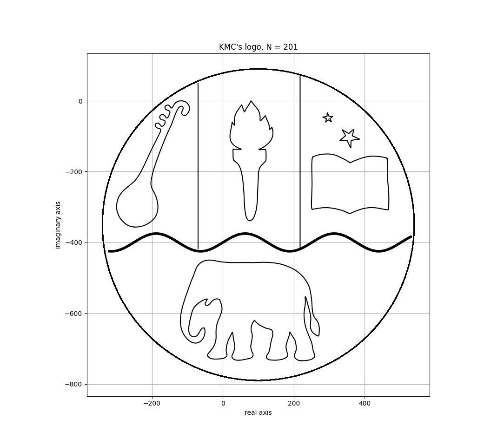

A representation of my college's logo on the complex plane.
Published on 28-05-2025
Work by Prasoon Patel and Hiten Dalmia, both from Semester VI of B. Sc. (Hons.) Mathematics, Kirori Mal College, University of Delhi.
The graph shown uses 201 terms of each of the Fourier series given below for sharper figures, however for tersity we have listed only the 10 most heavily weighted terms.
For \(0 \leq t \leq 1\)\[ (-2.0807+7.6352i)e^{-2\pi i 5t} + (-0.7781+8.6206i)e^{-2\pi i 4t} + (0.6888+16.7467i)e^{-2\pi i 3t} + (-1.122+17.6475i)e^{-2\pi i 2t} + (-0.9558+34.5031i)e^{-2\pi i t} + (75.8729+132.6276i) + (3.3382+88.4969i)e^{2\pi i t} + (-2.1103+11.3835i)e^{2\pi i 2t} + (2.4478+20.9526i)e^{2\pi i 3t} + (1.3211+11.9064i)e^{2\pi i 4t} \]
\[ (1.14+9.33i)e^{-2\pi i 5t} + (-6.54+9.8i)e^{-2\pi i 4t} + (-12.35+15.88i)e^{-2\pi i 3t} + (-32.89+22.34i)e^{-2\pi i 2t} + (-35.39+75.43i)e^{-2\pi i t} + (-173.12+112.06i) + (-12.27+56.64i)e^{2\pi i t} + (12.06+33.99i)e^{2\pi i 2t} + (9.71+8.63i)e^{2\pi i 3t} + (-5.15-1.2i)e^{2\pi i 4t} \]
\[ (1.38+6.95i)e^{-2\pi i 5t} + (-2.12-2.88i)e^{-2\pi i 4t} + (2.21-13.14i)e^{-2\pi i 3t} + (-3.73+2.71i)e^{-2\pi i 2t} + (5.49-9.95i)e^{-2\pi i t} + (353.24+225.15i) + (1.37+102.31i)e^{2\pi i t} + (-2.73+12.64i)e^{2\pi i 2t} + (1.04-11.62i)e^{2\pi i 3t} + (2.2-3.97i)e^{2\pi i 4t} \]
\[ (-1.72+0.65i)e^{-2\pi i 5t} + (1.13+0.07i)e^{-2\pi i 4t} + (0.13-0.67i)e^{-2\pi i 3t} + (2.69-0.18i)e^{-2\pi i 2t} + (-4.7+20.73i)e^{-2\pi i t} + (357.93+105.19i) + (2.61-0.03i)e^{2\pi i t} + (-1.32+3.63i)e^{2\pi i 2t} + (1.46+2.37i)e^{2\pi i 3t} + (4.81+0.33i)e^{2\pi i 4t} \]
\[ (0.86-0.32i)e^{-2\pi i 5t} + (-0.57-0.03i)e^{-2\pi i 4t} + (-0.07+0.34i)e^{-2\pi i 3t} + (-1.34+0.09i)e^{-2\pi i 2t} + (2.35-10.37i)e^{-2\pi i t} + (296.03+47.4i) + (-1.31+0.01i)e^{2\pi i t} + (0.66-1.82i)e^{2\pi i 2t} + (-0.73-1.18i)e^{2\pi i 3t} + (-2.4-0.17i)e^{2\pi i 4t} \]
\[ (-1.6+14.55i)e^{-2\pi i 5t} + (-4.48-5.7i)e^{-2\pi i 4t} + (-8.22+16.91i)e^{-2\pi i 3t} + (1.72-14.94i)e^{-2\pi i 2t} + (44.7+3.19i)e^{-2\pi i t} + (87.1+639.91i) + (111.24+16.13i)e^{2\pi i t} + (-3.16+41.42i)e^{2\pi i 2t} + (-23.55+7.57i)e^{2\pi i 3t} + (15.69-27.26i)e^{2\pi i 4t} \]
Other General Figures
Although the code and other workings for this particular project are completely separate, we would like to mention that this project is in part inspired by another project (part of coursework) 'Tracing Closed Curves with Epicycles' that was worked on by Faraz Riyaz, Diksha Kapoor and a co-author of the current project Hiten Dalmia.